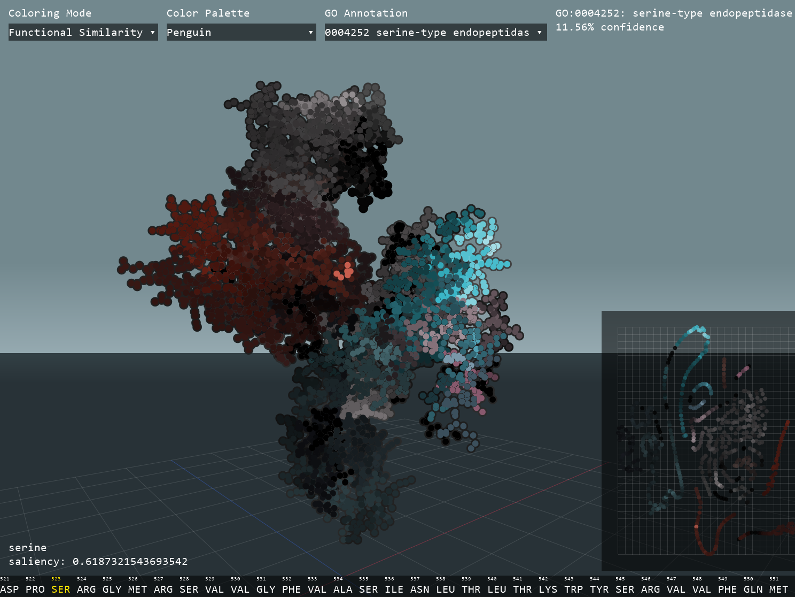
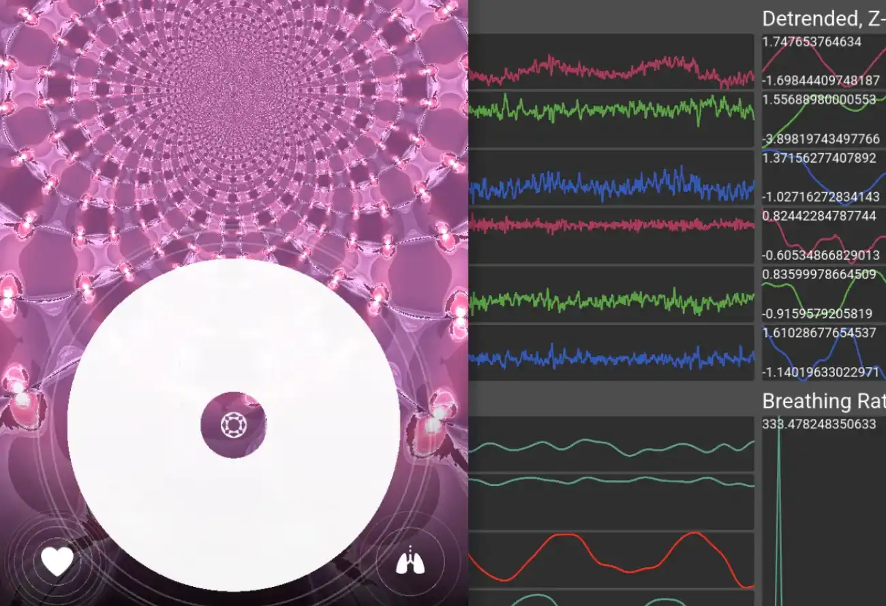
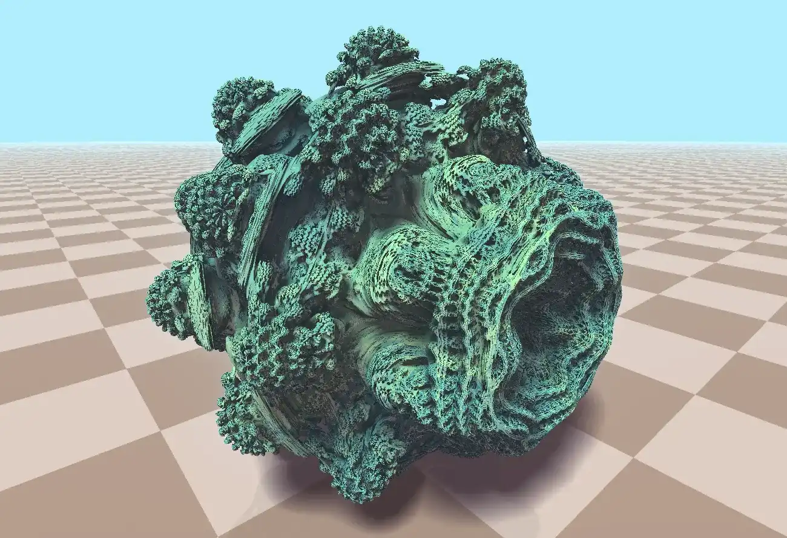

hi, I'm
lucy b. locks
game dev and researcher
research
Protein Visualizer
MIT Manolis Kellis Lab (2024)
An interactive visualization of protein structure and behavior based on AlphaFold embeddings.

GD Mobile Physiology
MIT Mobile Technology Lab (2024)
A library that uses smartphone sensors to measure heart and breathing rate. Used to develop Nāda, a user-friendly meditation app with biofeedback.

GD Fractals
MIT Computer Graphics Final Project (2025)
A Godot add-on to seamlessly render 3D fractals based on user-designed shapes.

Cognitive Impairment Screening App
MIT Mobile Technology Lab (2026)
An app that uses consumer EEG and fNIRS wearables to make cognitive impairment screening more accessible.